기계설계산업기사 (2002-05-26 기출문제)
1과목: 기계가공법 및 안전관리
1. 그림과 같은 일단 고정보에서 P = 4000N, ω = 300N/m 일때 고정단에서의 최대 굽힘모멘트는 몇 Nㆍm 인가?
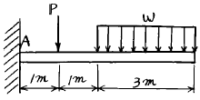
- 7500
- 7850
- 6260
- 7150
(정답률: 24%)

2. 원형단면의 보에 있어서 단면적을 A, 전단력을 V라 하면 최대전단응력의 값은 얼마인가?
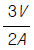
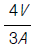
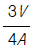
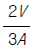
(정답률: 30%)
3. 지점사이의 길이 L=8m, 단면은 bxh=30x35cm인 균질체의 단순보가 있다. 이 보의 자중에 의한 최대 굽힘응력은 몇 kPa인가? (단, 자중은 650 N/m3 이다.)
- 59.1
- 69.1
- 79.1
- 89.1
(정답률: 20%)
4. 다음 그림은 어떤 단순보의 굽힘모멘트 선도이다. 어떤 하중 상태에 있는가? (단, Mb=굽힘모멘트, x=보의 길이)
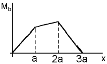
- 중앙에 분포하중이 a의 길이에 걸쳐 작용한다.
- 동일한 2개의 집중하중이 작용한다.
- 크기가 다른 2개의 집중하중이 작용한다.
- 중앙에 1개의 집중하중이 작용한다.
(정답률: 60%)
5. 그림과 같이 정사각형 판재에 σx=10 MPa, σy = 30 MPa이 작용할 때 최대 전단응력 τmax의 값과 방향은?
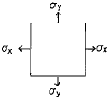
- 10 MPa, 45恩
- 10 MPa, 90恩
- 20 MPa, 45恩
- 20 MPa, 90恩
(정답률: 35%)
6. 길이 100㎝인 외팔보가 전길이에 걸쳐 5kN/m의 균일분포 하중과 자유단에 1kN의 집중하중을 동시에 받을 때 최대 처짐량은 얼마인가? (단, 보의 단면은 폭 4㎝×높이 6㎝인 직사각형이고, 탄성계수 E = 210GPa이다.)
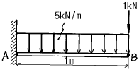
- 0.413㎝
- 0.633㎝
- 0.22㎝
- 0.713㎝
(정답률: 37%)
7. 바깥지름 70mm, 안지름 50mm의 속이 빈 축과 동일한 재료이면서 동일한 비틀림 강도를 가질 수 있는 속이 찬 축의 지름은 몇 mm인가?
- 70.1
- 63.3
- 60.2
- 56.5
(정답률: 43%)
8. 그림에서의 판 AB가 기울어 지지 않기 위한 스프링상수 k는 몇 kN/m인가?
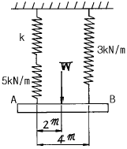
- 2.5
- 5.0
- 7.5
- 10
(정답률: 52%)
9. 그림과 같이 길이가 2m이고, 단면이 10cmx20cm인 단순보에서 보의 전단만을 고려한다면 집중 하중 P는 몇 N까지 작용시킬 수 있는가? (단, 이 보의 허용 전단응력은 225kPa이다.)
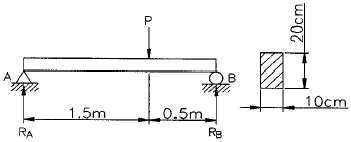
- 2565
- 3555
- 4000
- 12000
(정답률: 36%)
10. 다음 그림과 같이 단면적 10㎝2, 길이 1m인 봉의 양쪽에서 1 kN의 힘으로 인장했을 때, 5x10-3㎜ 늘어났다면 이 재료의 영률(Young's Modulus)은?
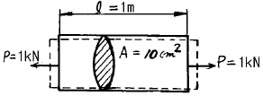
- 5 Pa
- 0.5 Pa
- 200 GPa
- 20 GPa
(정답률: 29%)
11. 강봉의 탄성한도 0.294GPa, 탄성계수 E = 200GPa 일 때 영구변형을 일으킴이 없이 이 봉의 단위체적 속에 저장 될 수 있는 탄성 변형에너지 u는 몇 kNXm/m3 인가?
- 21.609
- 41.609
- 216.09
- 416.09
(정답률: 31%)
12. 폭 10cm, 높이 15cm인 사각형 단면에서 도심을 지나는 축 x-x에 대한 관성모멘트와 단면계수는 각각 얼마인가?
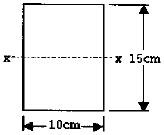
- 2812.5cm3, 375cm4
- 2812.5cm4, 375cm3
- 375cm3, 2812.5cm4
- 375cm4, 2812.5cm3
(정답률: 39%)
13. 그림과 같이 양단이 고정된 균일 단면봉에서 중간 m-n 단면의 중간점에 축하중 P 가 작용할 때 양단의 반력 R1과 R2는 각각 몇 N인가? (단, P = 1 kN 이다.)
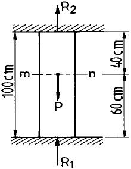
- R1=0.6, R2=0.4
- R1=0.4, R2=0.6
- R1=0.75, R2=0.25
- R1=0.25, R2=0.75
(정답률: 39%)
14. 단면의 폭 15㎝, 높이 60㎝, 길이 3m의 나무로된 단순보(simple beam)가 있다. 전 길이에 걸쳐 60kN/m의 균일분포하중이 작용할 경우, 이 보의 왼쪽 지점으로부터 90㎝, 보의 하면으로부터 위쪽으로 20㎝ 떨어진 점에서의 굽힘 응력은 몇 MPa인가?
- 2.1
- 3.1
- 4.1
- 5.1
(정답률: 12%)
15. 그림과 같이 양단지지보가 전 길이 ℓ m에 균일분포 하중 ω kN/m를 받고있을 때 보의 중앙을 밀어올려서 보의 중앙부 처짐량이 "0"이 되게 했다면 중앙지점의 지지력 R 은 얼마인가?
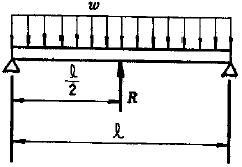
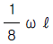
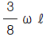
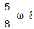
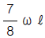
(정답률: 40%)
16. 매분 250회전으로 50 kW을 전달하는 동력축의 허용전단 응력은 몇 MPa인가? (단, 축지름은 10cm로 한다.)
- 9.73
- 12.82
- 15.81
- 19.34
(정답률: 18%)
17. 그림과 같이 지름 30cm의 벨트 풀리가 동력을 전달할 때 인장측에 4900N, 이완측에 2940N의 힘이 걸리고 있다. 이 축의 지름을 4cm라 하면 최대 비틀림 모멘트는 몇 Nㆍm인가?
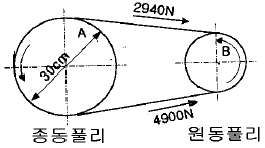
- 194
- 294
- 394
- 494
(정답률: 40%)
18. 양단고정 기둥은 일단고정 타단자유기둥보다 단말계수의 값이 몇배나 큰가?
- 2배
- 4배
- 8배
- 16배
(정답률: 34%)
19. 지름이 5㎝인 봉이 있다. 세장비(slenderness ratio)가 30일 때의 길이는 몇 cm 인가?
- 27.5
- 275
- 37.5
- 375
(정답률: 38%)
20. 다음 중 틀린 것은?
- 좌굴응력은 좌굴을 일으키는 최대의 응력이다.
- 수직응력은 압축응력과 인장응력으로 분류된다.
- 굽힘응력은 인장응력과 압축응력의 조합이다.
- 비틀림응력은 인장응력의 일종이다.
(정답률: 34%)
2과목: 기계제도
21. 정밀 입자 가공에서 호닝(honing)의 결과에 대한 설명으로 틀린 것은?
- 표면 정밀도를 향상시킨다.
- 최소의 발열과 변형으로 신속하고 경제적인 정밀가공을 할 수 있다.
- 전(前)공정에 나타난 테이퍼, 진원도 또는 직선도를 바로 잡는다.
- 호닝에 의하여 구멍의 위치를 변경시킬 수 있다.
(정답률: 77%)
22. 강의 담금질 조직 중 에서 경도가 제일 큰 것은?
- Troostite
- Austenite
- Martensite
- Sorbite
(정답률: 67%)
23. 고체 침탄법에서 침탄제와 촉진제로 많이 사용하는 것은 ?
- 목탄 60%와 BaCO3 40%의 혼합물
- NaCN와 KCN의 혼합물
- 목탄 또는 골탄
- BaCl2 및 CaCO3의 혼합물
(정답률: 39%)
24. 줄작업(filing)방법이 아닌 것은?
- 원형법
- 사진법
- 직진법
- 병진법
(정답률: 40%)
25. 사인바(Sine bar)에 관하여 틀리게 설명한 것은?
- 2개의 원주핀이 블록과 더불어 사용된다.
- 3각형 모양의 블록이 필수적이다.
- 3각함수를 이용하여 각도의 측정을 정밀하게 하는 데 사용한다.
- 블록을 올려 놓기 위한 정반도 함께 사용한다.
(정답률: 45%)
26. 일감의 표면을 완성가공하는 방법으로 가공면은 매끈하고 방향성이 없고 치수변화보다는 고정밀도의 표면을 얻는것이 주 목적인 것은?
- 래핑(lapping)
- 액체호닝(liquid honing)
- 초음파가공(ultra-sonic machining)
- 슈퍼피니싱(superfinishing)
(정답률: 46%)
27. 전단가공에 속하지 않는 것은?
- 구멍뚫기(punching)
- 세이빙(shaving)
- 비딩(beading)
- 트리밍(trimming)
(정답률: 44%)
28. 스프링 백의 양(量)이 커지는 원인이 아닌것은?
- 소성이 큰 재료일수록
- 경도가 높을수록
- 구부림 반지름이 클수록
- 탄성한계가 높을수록
(정답률: 31%)
29. 그림에서 I형 맞대기 용접을 하려고 한다. 올바른 용접 기호는?
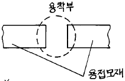
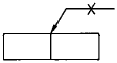
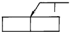
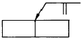
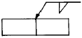
(정답률: 45%)
30. 단조용 강재에서 유황의 함유량이 많을 때, 가장 관계가 깊은 것은?
- 인성증가
- 적열취성
- 가소성증가
- 냉간취성
(정답률: 50%)
31. 용접부품을 조립하는 데 사용하는 도구는?
- 드릴지그
- 분할지그
- 드릴바이스
- 용접지그
(정답률: 72%)
32. 지름 50㎜인 연강 둥근 봉을 20m/min의 절삭 속도로 선삭할 때, 스핀들의 회전수는 얼마인가?
- 약 100r.p.m
- 약 127r.p.m
- 약 440r.p.m
- 약 500r.p.m
(정답률: 49%)
33. 압탕의 역할로서 옳지 않은 것은?
- 균열이 생기는 것을 방지한다.
- 주형내의 쇳물에 압력을 준다.
- 주형내의 용재를 밖으로 배출시킨다.
- 금속이 응고할때 수축으로 인한 쇳물 부족을 보충한다.
(정답률: 21%)
34. 나사의 측정 대상이 아닌 것은?
- 리드각
- 유효지름
- 산의 각도
- 피치
(정답률: 36%)
35. 목형재료로서 목재에 대한 특징의 설명 중 틀린 것은?
- 영구적으로 쓸수 있다.
- 열의 불량도체이고 팽창계수가 작다.
- 가공이 용이하다.
- 가볍다.
(정답률: 61%)
36. 강, 구리 황동의 작은 단면의 선, 봉, 관 등을 접합하는 데 가장 적합한 저항 용접은?
- 점용접(spot welding)
- 시임용접(seam welding)
- 프로젝션용접(projection welding)
- 업셋용접(upset welding)
(정답률: 29%)
37. 절삭가공에 있어서 빌트 업 에지(built-up edge)를 줄이는 방법이 아닌 것은?
- 공구의 윗면경사각을 크게한다.
- 절삭속도를 증가시킨다.
- 칩의 두께를 감소시킨다.
- 마찰계수가 큰 초경합금공구를 사용한다.
(정답률: 56%)
38. NC 공작기계에서 검출기를 기계 테이블에 직접 부착하여 피드백(feed back)을 행하는 서보기구(servo system)는?
- open loop system
- closed loop system
- hybrid servo system
- semi-closed loop system
(정답률: 43%)
39. 열간 압연강판과 비교한, 냉간 압연강판의 장점이 아닌것은?
- 스케일(scale)부착이 있고 판의 표면이 깨끗하고 아름답다.
- 가공경화로 인한 재료의 강도를 증가시킨다.
- 표면처리하면 내식성이 우수하다.
- 기계적 성질과 가공성이 우수하다.
(정답률: 29%)
40. 두께 3㎜, 0.1%C의 연강에 지름 20㎜의 구멍으로 펀칭할 때, 프레스의 슬라이드 평균 속도를 5 m/min, 기계효율 70%로 하면 소요 동력은 얼마 인가? (단, 판의 전단저항은 25㎏f/㎜2이다)
- 1.66PS
- 2.66PS
- 3.66PS
- 7.48PS
(정답률: 12%)
3과목: 기계설계 및 기계재료
41. 다음은 1줄 리벳겹치기 이음에서 강판의 효율을 표시한식이다. 옳은 것은? (단, P는 리벳의 피치, d는 리벳구멍의 직경이다.)
- η = P - 2d/P
- η = 1 - d/P
- η = P - 2d/d
- η = 1 - P/d
(정답률: 45%)
42. 니켈 60~70% 정도로 함유한 Ni-Cu계의 합금으로, 내식성이 좋으므로 화학공업용 재료로 많이 쓰이는 재료는?
- 톰백
- 알코아
- Y합금
- 모넬메탈
(정답률: 35%)
43. 탄소강에서 온도가 상승함에 따라 기계적 성질이 감소하지 않는 것은?
- 탄성계수
- 탄성한계
- 항복점
- 단면수축율
(정답률: 32%)
44. 연신율이 크고, 인장강도 25㎏f/㎜2로 전구의 소켓이나 탄피용으로 쓰이는 황동은?
- 톰백
- 7ㆍ3 황동
- 6ㆍ4 황동
- 함석 황동
(정답률: 35%)
45. 다음 그림과 같은 원통코일 스프링의 처짐량 δ = 60 ㎜ 일때, 작용하는 하중 W는 몇 kgf인가? (단, 스프링 상수 k1 = 6 ㎏f/㎝, k2 = 2 ㎏f/㎝이다.)
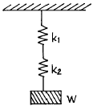
- W = 4 kgf
- W = 6 kgf
- W = 9 kgf
- W = 48 kgf
(정답률: 37%)
46. 코터의 폭이 20 ㎜, 두께가 10 ㎜, 코터의 허용 전단응력이 2 ㎏f/㎜2이라면 코터에 가할 수 있는 하중은 얼마인가?
- 400 ㎏f
- 800 ㎏f
- 1600 ㎏f
- 3200 ㎏f
(정답률: 24%)
47. 탄소강에 첨가할 경우 결정립을 미세화시키는 원소는?
- P
- V
- Si
- Al
(정답률: 20%)
48. 기어의 압력각을 크게 할 때 일어나는 현상으로 옳은 것은?
- 이의 강도가 약화된다.
- 축간거리가 멀어진다.
- 물림율이 감소한다.
- 속도비가 크게 된다.
(정답률: 27%)
49. 평벨트 전동에서 유효장력이란 무엇인가?
- 벨트의 긴장측 장력과 이완측 장력과의 차를 말한다.
- 벨트의 긴장측 장력과 이완측 장력과의 비를 말한다.
- 벨트 풀리의 양쪽 장력의 합을 평균한 값이다.
- 벨트 풀리의 양쪽 장력의 합을 말한다.
(정답률: 53%)
50. 브레이크 드럼에서 브레이크 블록을 밀어붙이는 힘이 150㎏f, 마찰계수 μ = 0.3, 드럼의 지름 350㎜로 할때 토크는?
- 9⑤8㎏fㆍ㎜
- 9875㎏fㆍ㎜
- 6758㎏fㆍ㎜
- 7875㎏fㆍ㎜
(정답률: 25%)
51. 다음 중 고속도강과 가장 관계가 먼 사항은?
- W-Cr-V(18-4-1)계가 대표적이다.
- 500-600℃로 뜨임하면 급격히 연화(軟化)된다.
- W계와 Mo계 두가지로 크게 나뉜다.
- 각종 공구용으로 이용된다.
(정답률: 44%)
52. 구상흑연 주철을 만들 때에 사용되는 첨가재는?
- Al
- Cu
- Mg
- Ni
(정답률: 33%)
53. 볼나사의 특징 중 틀린 것은?
- 나사의 효율이 좋다.
- 백래시(back lash)를 작게 할 수 있다.
- 체결용에 주로 사용된다.
- 높은 정밀도를 오래 유지할 수가 있다.
(정답률: 54%)
54. 연성(延性)재료가 고온에서 정하중을 받을때 기준 강도로서 어떤 것을 취하는가?
- 항복점
- 피로한도
- 크리프한도
- 극한강도
(정답률: 34%)
55. 다음 중 역류를 방지하여 유체를 한쪽 방향으로 흘러가게 하는 밸브는?
- 게이트 밸브
- 첵 밸브
- 글로브 밸브
- 볼 밸브
(정답률: 57%)
56. 고Ni강으로 강력한 내식성을 가지고 있으며, 약한 자장으로 큰 투자율을 가지고 있으므로, 해저 전선의 장하코일 등에 쓰이고 있는 것은?
- 인바아
- 엘린버
- 퍼어멀로이
- 바이메탈
(정답률: 25%)
57. 볼베어링의 수명 회전수 Ln, 베어링 하중 P, 기본부하용량을 C라 할 경우 다음 중 옳은 것은?
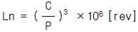
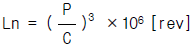
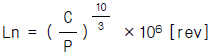
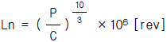
(정답률: 37%)
58. 다음은 고주파경화법의 장점이 아닌 것은?
- 재료의 표면부위만 경화된다.
- 가열시간이 대단히 짧다.
- 표면의 탈탄 및 결정입자의 조대화가 일어나지 않는 다.
- 표면에 산화가 많이 일어난다.
(정답률: 54%)
59. 인장시험편을 만들때 고려하지 않아도 되는 사항은?
- 시험편의 무게
- 표점거리
- 평행부의 길이
- 평행부의 단면적
(정답률: 36%)
60. 공정점에서의 자유도(degree of freedom)는 얼마인가?
- 0
- 1
- 2
- 3
(정답률: 50%)
4과목: 컴퓨터응용설계
61. 기하학적으로 곡선형상을 표현하기 위해서는 기본적으로 점과 벡터에 의해서 구성된다. 이러한 벡터를 구성하기 위한 기본 요소가 아닌 것은?
- 벡터의 시작점
- 벡터의 길이
- 벡터의 방향
- 벡터의 굴절
(정답률: 60%)
62. 현재 CAD를 활용하여 CAD/CAM/CAE를 디자인, 제품설계, 금형설계, 생산까지 모든 공정에서 CAD 데이터를 공유하여 업무를 추진하는 방법은?
- 가치공학(Value Engineering)
- 동시공학(Concurrent Engineering)
- 가치분석(Value Analysis)
- 총괄적 품질관리(Total Quality Control)
(정답률: 50%)
63. 평판 디스플레이 장치중에서 전기장의 원리가 빛을 발생하는 데에 이용되지 않고 단지 투과되는 빛의 양만을 조절하는 데에 이용되는 것은?
- Electroluminescent display
- Liquid crystal display
- Plasma panel
- Image scanner
(정답률: 25%)
64. 도면에서 부품란의 품번 순서는? (단, 부품란은 도면의 우측 아래에 있다.)
- 위에서 아래로
- 아래에서 위로
- 좌에서 우로
- 우에서 좌로
(정답률: 52%)
65. 그림과 같이 두 부품이 교차하는 부분을 표시한 것중 옳은 것은?
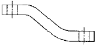
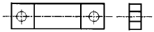
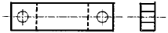
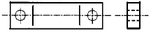
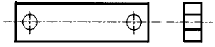
(정답률: 41%)
66. 가상선의 용도로 맞지 않는 것은?
- 인접부분을 참고로 표시하는데 사용
- 도형의 중심을 표시하는데 사용
- 가공전 또는 가공후의 모양을 표시하는데 사용
- 도시된 단면의 앞쪽에 있는 부분을 표시하는데 사용
(정답률: 49%)
67. 억지 끼워맞춤에서 축의 최소 허용치수에서 구멍의 최대 허용치수를 뺀 값은?
- 최소 죔새
- 최대 죔새
- 최소 틈새
- 최대 틈새
(정답률: 47%)
68. 제품의 모델(model)과 그에 관련된 데이터 교환에 관한 표준 데이터 형식이 아닌 것은?
- STEP
- IGES
- DXF
- SAT
(정답률: 62%)
69. 미터나사(metric thread)에서 사용하는 나사산 각도는?
- 30°
- 45°
- 50°
- 60°
(정답률: 36%)
70. 다음 그림에 해당되는 좌표계는?
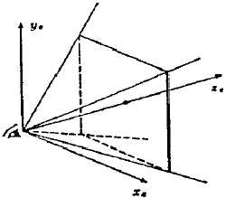
- 시점(視点) 좌표계
- 정규 투시 좌표계
- 3차원 스크린 좌표계
- 상대 좌표계
(정답률: 47%)
71. 기준치수가 30, 최대허용치수가 29.96, 최소 허용 치수가 29.94 일때 아래치수 허용차는?
- -0.06
- +0.06
- -0.04
- +0.04
(정답률: 59%)
72. 컴퓨터그래픽에서 도형을 나타내는 그래픽 기본 요소가 아닌 것은?
- 점(dot)
- 선(line)
- 원(circle)
- 구(sphere)
(정답률: 43%)
73. 점 P1(25,50)을 ㅿx=14, ㅿy=6만큼 이동시킨 후 원래의 위치로 되돌리기 위한 Matrix에서 b31은 얼마인가? (단, [x'y'1]=[x y 1]
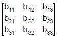
)- -25
- -50
- -14
- -6
(정답률: 39%)
74. 회전형 가변저항기를 X축과 Y축 방향으로 회전시켜 커서를 이동시키는 기구로 정확한 위치 선택이 용이하며, 주로 키보드와 같이 부착되어 있는 입력장치는?
- 섬휠(thumb wheel)
- 라이트 펜(light pen)
- 디지타이져(digitizer)
- 푸시 버튼(push button)
(정답률: 47%)
75. 일반적인 컴퓨터 그래픽 하드웨어의 대표적인 구성요소로 보기 어려운 것은?
- 입력
- 탐색
- 저장
- 출력
(정답률: 36%)
76. 가는 1점 쇄선으로 표시하지 않는 선은?
- 가상선
- 중심선
- 기준선
- 피치선
(정답률: 41%)
77. 두 점(1,1), (3,4)를 연결하는 선분을 원점을 기준으로 반시계 방향으로 60도 회전한 도형의 양 끝점의 좌표를 구한 것은?
- (-0.366, 4.598), (-1.964, 1.366)
- (-0.366, 1.366), (-1.964, 4.598)
- (-0.866, 0.5), (0.5, 0.866)
- (0.366, 1.366), (1.964, 4.598)
(정답률: 44%)
78. 다음 투상의 평면도에 해당하는 것은?
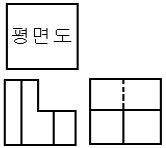
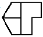
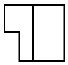
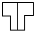
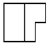
(정답률: 37%)
79. 컬러 래스터 스캔 화면 생성방식에서 3 bit plane의 사용 가능한 색깔의 수는 모두 몇 개인가?
- 8
- 32
- 256
- 1024
(정답률: 35%)
80. 베어링 기호 NA4916V의 설명 중 틀린 것은?
- NA : 니들 베어링
- 49 : 치수계열
- 16 : 안지름 번호
- V : 접촉각 기호
(정답률: 50%)